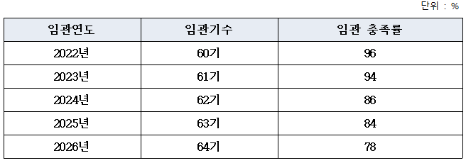
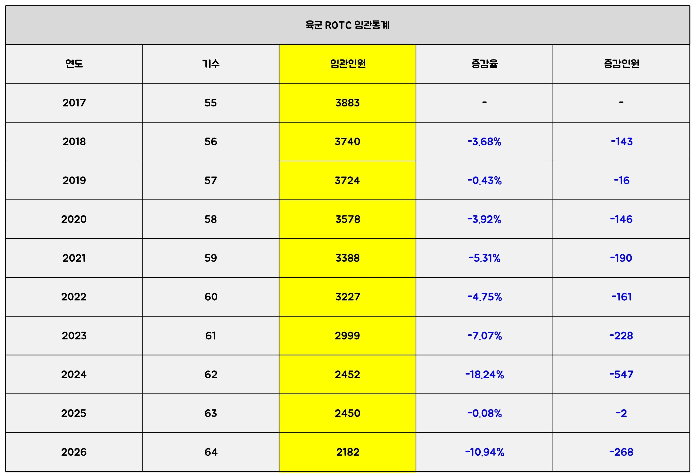
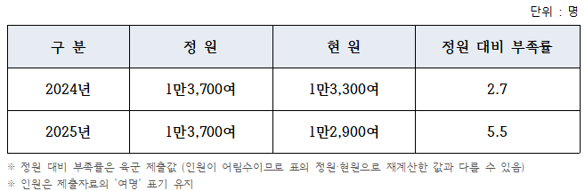
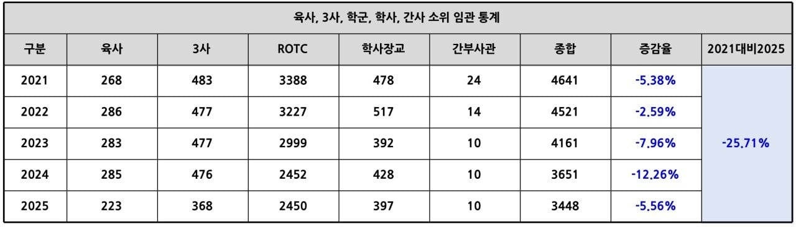

2022년 기준 3,300명에서
2026년 2,800명으로 낮췄으나
그에 미치지 못하는 소쎄이들이 임관

육군 ROTC만 기준으로 따져서 22% 미달이라는데
2,182명이면 2,800명 대비 77.9%로
해당 통계는 얼추 맞아보임

다만 육군 소•중위 통계를 보면
정원은 13,700명으로
2025년 소•중위 현원이 12,900명이라는데
2025년 정원대비 부족율이 5.5%라고 함

대부분을 차지하는 일반 육군 장교 5대 출신으로 따져보았을때
23~25년 소•중위 인원은 11,260명임
전문사관, 간호사관 등 더해서 따져보았겠지만
뭘 어떻게 해서 12,900명까지 뻥튀기 됐는가는 의문임
(간호사관은 1년에 100명도 임관 안한다)
아무튼 장교는 만들어진 것이 아닌
만들어지는 것
북괴가 도발해도 뭘 하는지 모르겠지만
많이 지원하자
나 학군으로 전역할때만 해도 아들 낳으면 정말 추천하고픈 길이었음
근데 10년만에 절대 추천 못하게될 커리어로 바뀜